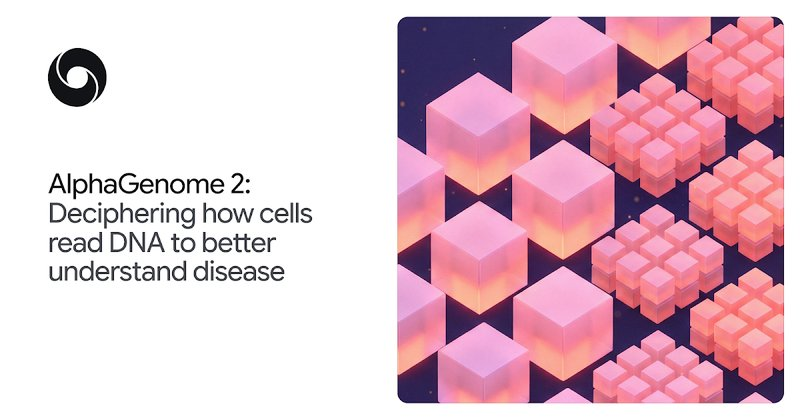

国际重要谷歌 DeepMind 发布 AlphaGenome 2：解读细胞如何读取 DNA
AlphaGenome 2: Deciphering how cells read DNA to better understand disease
DeepMind 发布基因序列模型 AlphaGenome 2，用来解读细胞如何读取 DNA、帮助识别致病变异，可推动疾病研究
Google DeepMind 官方博客 · 11-11 23:00
看原文

国际重要AlphaGenome 2: Deciphering how cells read DNA to better understand disease
DeepMind 发布基因序列模型 AlphaGenome 2，用来解读细胞如何读取 DNA、帮助识别致病变异，可推动疾病研究
Taiwan’s chipmaking giant TSMC to invest $1B in Anthropic, OpenAI
台积电计划向Anthropic、OpenAI投资10亿美元，被视为AI热潮中循环融资的最新案例
智谱、MiniMax、千问办公、阿里云、Qoder等大模型厂商在天猫打5折，体现AI大模型产品电商化促销趋势
Talk it through with Gemini, now on Apple CarPlay
谷歌宣布 Gemini 已登陆苹果 CarPlay，用户可在车载系统里用语音和 Gemini 对话
月之暗面发布托管智能体，AI厂商从“卖token”转向“租数字员工”，计价锚点从IT预算滑向人力预算，或重构用工形态
姚期智、杨植麟联手令数学家松口气，不过当前尚无模型能真正解决开放猜想
AI“店长”助力商家出海，“双十一”海外潜力市场成交量大涨，彰显AI出海应用效果
罗永浩在双11直播间上手TRAE，直播间化身AI秀场，价格与门槛大幅降低，普及AI编程
With $720M round, Britain's Fractile gets a leg up in the race for AI chips
英国 AI 芯片公司 Fractile 完成 7.2 亿美元融资，成为专用 AI 芯片赛道中资金较充足的玩家之一
Google DeepMind just mathematically verified key parts of Signal
Google DeepMind用四周时间数学验证Signal关键部分，暗示AI可让形式验证更实用
华为开放HarmonyOS 7 Developer Beta定向招募，新版本包体约5.55GB，供开发者开发调测新版本API应用
我国在酒泉卫星发射中心用长征二号丁火箭发射探源计划探路者卫星，卫星顺利进入预定轨道，任务成功
中国民航大学与宁德时代在福建宁德签约，将共建航空电池适航技术创新联合实验室，联合培养人才
统信桌面操作系统V25发布，新增防卡死保护，AI助手升级为“小 U 同学”并支持全盘知识库调度
IBM to offer access to a dual-processor quantum system in 2027
IBM计划2027年提供双处理器量子系统访问，并计划在明年底前连接两个520量比特芯片
Apple is shuttering its 28-year-old online community forum
Apple关闭已有28年历史的在线社区论坛，该论坛现已设为只读
Meta is losing its longtime head of infrastructure
Meta基础设施负责人Santosh Janardhan将卸任，他于2009年加入公司
Anduril says its first satellite can see adversaries maneuver in orbital night
Anduril称其首颗卫星凭借巨大动态范围，可在轨道夜间全黑环境中观测对手机动
中国央行支持更多境外主体发行熊猫债，扩大境外机构在华债券发行
用三个关键词解读我国前10个月外贸进出口数据，分析相关贸易表现
中国财政部严查会计审计违法违规行为，旨在规范相关执业秩序
中国超过美国，成为巴西医疗器械最大进口来源国，中国制造在巴西医疗设备市场占据重要地位
Oil production nears pre-Iran war levels, OPEC says
欧佩克称石油产量接近伊朗战争前水平，沙特报告产量因航运中断仍攀升至数月高点
Lula Unveils Plan to Curb Spending Growth in Bid to Calm Fiscal Worries
卢拉提出削减支出增长计划，以平息财政担忧，回应相关经济压力
US tech stocks rally as AI trade revives
美国科技股随AI交易复苏而反弹，受AI板块回暖影响
Poundland set for more time to secure a rescue deal as emergency talks continue
英国折扣连锁 Poundland 将获得更多时间寻找救援方案，紧急谈判仍在继续，关系大量门店和员工去留
Clashes erupt in Barcelona after thousands join Spain general strike
西班牙数千人参加 14 年来首次全国大罢工，抗议住房和生活成本高企，巴塞罗那夜间发生冲突
北京启动空气重污染橙色预警，涉及如何科学防护重污染天气的问题
总台揭露MCN机构“暴力起号”套路，四川宜宾已成立调查组开展相关调查
住建部开展房屋市政工程预防高处坠落专项行动，旨在提升施工安全
广西北海一女子刷短视频被骗100余万元，警方已将损失全额追回
Kenya's Ebola outbreak: Last patient discharged as countdown begins to be being declared free of the virus
肯尼亚最后一名埃博拉患者出院，若无新病例，国家将启动42天倒计时准备宣告病毒清除
Portugal cancels more than 300 flights, shuts schools due to Storm Charles
葡萄牙因大西洋风暴查尔斯取消300多个航班并关闭学校，当局此前为风暴做足准备
Hoax bomb threats target schools across Italy, UK and Ireland
意大利、英国和爱尔兰数千所学校收到虚假炸弹威胁邮件，事件引发安全关注
2026年中国金鸡百花电影节闭幕，电影《给阿嬷的情书》获得两项大奖
第十二届丝绸之路国际艺术节落幕，标志着该届国际艺术活动结束
话剧《夜间故事》汇入四篇苏童作品，于北京师范大学登台演出
婺剧《三打白骨精》揭幕第十二届上海国际喜剧节，拉开喜剧节序幕
Coachella 2027: Dua Lipa set to be first female British headliner
Dua Lipa将成为Coachella 2027首位英国女性压轴艺人，Tame Impala、SZA等亦担纲压轴
Caine Prize for African writing finds 'no evidence' winning story was AI generated
非洲写作凯恩奖称未找到获奖故事AI生成的证据，津巴布韦作家辛巴拉萨·昆迪泽扎否认相关指控
Tamil Nadu: India investigates alleged 'AI scam' involving public library books
印度泰米尔纳德邦调查涉及公共图书馆图书的涉嫌AI诈骗，并下令对全州图书馆藏书进行内部审计
The European Commission's new Digital Fairness Act could change monetisation in games forever - and not just in Europe
欧盟委员会发布新的数字公平法案，可能永久改变欧洲及全球游戏变现方式，并推动取消战利品箱
Sensor Tower称《GTA6》在PS5和Xbox平台预购销量约1031万份，扣除退款后收入突破10亿美元
As of this week, PlayStation 5 has surpassed 100 million consoles sold
索尼最新数据显示，PlayStation 5 全球销量已突破 1 亿台，跻身史上销量过亿的主机之列
叙事解谜游戏《Hope in the City》登陆Steam，以沈阳为背景，国区首发价68.4元并首日加入XGP
针对389家游戏工作室并购调查显示，34%关停，十年内关停比例达38.9%
Nintendo Takes Down Switch Emulators and Mod Chip Firmware in Massive GitHub DMCA Sweep
任天堂向GitHub发送四份DMCA通知，针对Yuzu、Citron Neo等两款Switch模拟器及模组芯片固件
Destroy All Humans remake developer goes independent after almost 10 years of ownership, splits from THQ Nordic and parent company Embracer Group
Black Forest Games通过管理层收购，分离出前所有者THQ Nordic和母公司Embracer Group，实现独立